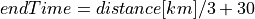
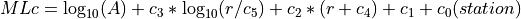
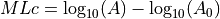
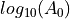
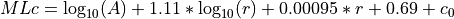
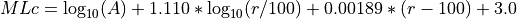
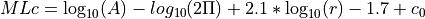

MLc¶
Custom magnitude for local events measured on horizontal components
Description¶
MLc is the custom magnitude for local events provided by the mlc plugin. The implementation is based on specifications by Hessian Agency for Nature Conservation, Environment and Geology, Hessian Earthquake Service.
The MLc magnitude is very similar to the original ML, except that by default
Amplitude pre-filtering is applied.
A parametric magnitude calibration function applies.
Hypocentral distance is used.
Regionalization of magnitude computation is provided through global module configuration. Configuration of global bindings provides additional flexibility:
Amplitudes can be pre-filtered before applying Wood-Anderson simulation (
amplitudes.MLc.preFilter),Wood-Anderson simulation is optional:
amplitudes.MLc.applyWoodAnderson,Measured amplitudes can be scaled accounting for expected unit (
amplitudes.MLc.amplitudeScale),A parametric or A0-based non-parametric magnitude calibration function can be applied as controlled by
magnitudes.MLc.calibrationType.Consider either hypocentral or epicentral distance for computing magnitudes (
magnitudes.MLc.distMode).
General (default) conditions apply:
Amplitude pre-filtering, configurable: BW(3,0.5,12).
Amplitude unit in SeisComP: millimeter (mm) or as considered by the configured calibration parameters.
Optional amplitude scaling and Wood-Anderson simulation.
Time window, configurable: 150 s by scautopick or distance dependent with , e.g. by scmag or scolv.
Distance type, configurable: hypocentral or epicentral.
Distance range, configurable: 0 - 8 deg, measurements beyond 8 deg will be strictly ignored.
Depth range, configurable: <= 80 km.
Magnitude calibration, configurable: parametric or non-parametric.
Amplitudes¶
MLc amplitudes can be measured automatically by scautopick or scamp
or interactively by scolv very similarly to the original ML,
except that they can be pre-filtered and applying Wood-Anderson simulation is
optional: amplitudes.MLc.preFilter,
amplitudes.MLc.applyWoodAnderson.
By default amplitudes are measured on both horizontal components where the
absolute maxima are taken. They are combined to a final measured amplitude by
taking the mean. The methods for measuring and combining the amplitudes are
configurable:
amplitudes.MLc.measureType, amplitudes.MLc.combiner.
The Wood-Anderson simulation will convert input velocity data to ground
displacement in mm. The input data may be of a different unit after applying
amplitudes.MLc.preFilter, e.g. when integration is applied, and / or
when Wood-Anderson simulation is disabled. Configure
amplitudes.MLc.amplitudeScale for converting the unit of the
processed data to the unit expected by the
station magnitude calibration for the measured
amplitude.
Note
For comparing MLc amplitudes with ML amplitudes set the global bindings parameters
amplitudes.MLc.preFilter = ""
amplitudes.MLc.combiner = average
Station Magnitudes¶
Station magnitudes are computed from measured amplitudes automatically by scmag or interactively by scolv. By global bindings configuration MLc considers
Hypocentral (default) or epicentral distance:
magnitudes.MLc.distMode.Distance range:
magnitudes.MLc.minDist,magnitudes.MLc.maxDist.Events with depth up to
magnitudes.MLc.maxDepth.Parametric or non-parametric calibration functions
parametric when
magnitudes.MLc.calibrationType= “parametric”`:
where
A: displacement amplitude measured in unit of mm or as per configuration
r: hypocentral (default) or epicentral distance
c1, c2, c3, c4, c5: general calibration parameters
c0: station-specific correction
r: Hypocentral (default) or epicentral distance as configured by
magnitudes.MLc.distMode.
A0-based non-parametric when
magnitudes.MLc.calibrationType= “A0”`:
where
: distance-dependent correction value. Read MLv for the details.
Note
The magnitude calibration function can regionalized by adjusting global module
configuration parameters in MLc region profiles of
magnitudes.MLc.region.* and in a MLc Magnitude type profile e.g.
in global.cfg.
Network Magnitude¶
The network magnitude is computed from station magnitudes automatically by
scmag or interactively by scolv.
Originally the median was computed from all station MLc to form the
network magnitude MLc. Here, the trimmed mean is applied. Outliers
beyond the outer 12.5% percentiles are removed before forming the mean. The
method can be adjusted in scmag by magnitudes.average.
Examples¶
The flexibility of the amplitude and magnitude processing allows to apply MLc in various use cases, e.g.
Default: Pre-filtered and gain-corrected amplitudes, Wood-Anderson corrected and measured in mm for Southwestern Germany, Stange [57]:

Wood-Anderson-corrected displacement amplitudes measured in mm for Southern California, Hutton and Boore [42]:

Pre-filtered velocity amplitudes in units of mym/s (requiring to set
amplitudes.MLc.amplitudeScale), no Wood-Anderson correction, for West Bohemia, e.g. Hiemer and Roessler [41]:
Setup¶
Set the configuration and calibration parameters in the global bindings similar to ML. Instead of configuring lots of global bindings profiles or station bindings one line per parameter can be added to the global module configuration (
global.cfg) which takes the formmodule.trunk.NET.STA.amplitude.MLc.preFilter = value module.trunk.NET.STA.magnitude.MLc.parametric.c0 = value
Add MLc to the list of default amplitudes and magnitudes if MLc is to be computed by automatic modules, e.g. of scamp, scmag.
Configure scmag (
magnitudes.averageinscmag.cfg) for choosing the method to form the network magnitude from station magnitudes, e.g.magnitudes.average = MLc:median
Add MLc to the list of magnitudes preferred by scevent (
eventAssociation.magTypesinscevent.cfg) in order to let MLc become the preferred magnitude.Set defaults/visibility of MLc in GUI modules, e.g. scolv or scesv.
Note
All default values for bindings configuration parameters are from Stange [57].
Module Configuration¶
Note
magnitudes.MLc.* Regionalized calibration parameters for MLc. The region itself is defined by another magnitude-type MLc profile.
Note
magnitudes.MLc.region.* Add one profile for every region. The profile name equals the name of a polygon configured in the BNA file of the Magnitude-type profile. The Magnitude-type profile and the polygon must exist. The special name “world” corresponds to the region of the entire planet as a fallback.
Note
magnitudes.MLc.region.$name.* $name is a placeholder for the name to be used.
Note
magnitudes.MLc.region.$name.A0.* Parameters for A0, non-parametric magnitude calibration.
-
magnitudes.MLc.region.$name.A0.logA0¶ Type: string
Overrides the calibration function log10(A0) for computing MLc per region. See logA0 description in the bindings.
Note
magnitudes.MLc.region.$name.parametric.* Parameters for parametric magnitude calibration: MLc = log10(A) + c3 * log10(r/c5) + c2 * (r + c4) + c1 + c0(station)
-
magnitudes.MLc.region.$name.parametric.c0¶ Type: double
Overrides the calibration parameter c0 for computing MLc per region. See c0 description in the bindings.
-
magnitudes.MLc.region.$name.parametric.c1¶ Type: double
Overrides the calibration parameter c1 for computing MLc per region. See c1 description in the bindings.
-
magnitudes.MLc.region.$name.parametric.c2¶ Type: double
Overrides the calibration parameter c2 for computing MLc per region. See c2 description in the bindings.
-
magnitudes.MLc.region.$name.parametric.c3¶ Type: double
Overrides the calibration parameter c3 for computing MLc per region. See c3 description in the bindings.
-
magnitudes.MLc.region.$name.parametric.c4¶ Type: double
Overrides the calibration parameter c4 for computing MLc per region. See c4 description in the bindings.
-
magnitudes.MLc.region.$name.parametric.c5¶ Type: double
Overrides the calibration parameter c5 for computing MLc per region. See c5 description in the bindings.


{kind=link}